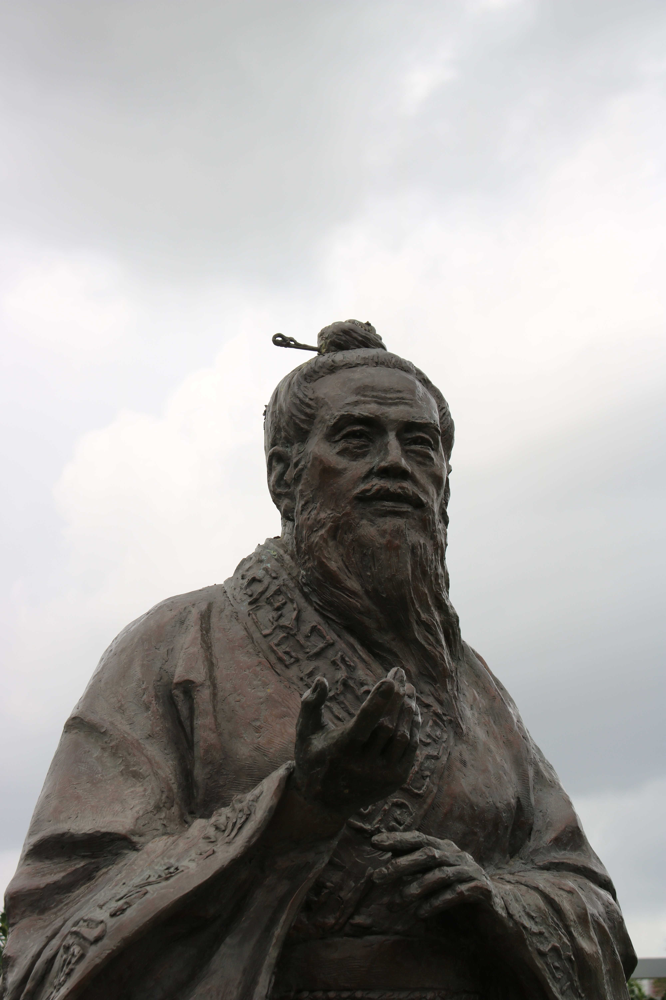

Confucius: A Wise Teacher
Confucius was a teacher who cared about making the world a better place through kindness, respect, and good values. His teachings continue to inspire people to be better and to treat each other with care and understanding.

Timelines
551 BC Confucius is born in China during a time when people are looking for ways to live in peace and harmony.
500s BC He becomes a famous teacher, sharing his ideas about how people should treat each other and live together.
478 BC Confucius passes away, but his teachings keep spreading even after he died.
Impact on the World
Confucius was a wise thinker who left a big mark on Ancient China and beyond:
Kindness and Respect: He believed in treating others with kindness and respect, like you would want to be treated.
Ethics and Values: Confucius taught people to be good and to care for their families, friends, and communities.
Teaching Legacy: His students wrote down his ideas in a book called the "Analects," which became very important in Chinese culture.
Influence Today: Even today, people around the world learn from Confucius' wise sayings and ideas about how to live a good life.
Fun Facts
Confucius was born in China in 551 BC.
He loved to read and learn, and he taught many students throughout his life.
People called him "Master Kong" or "Kong Fuzi" in Chinese.